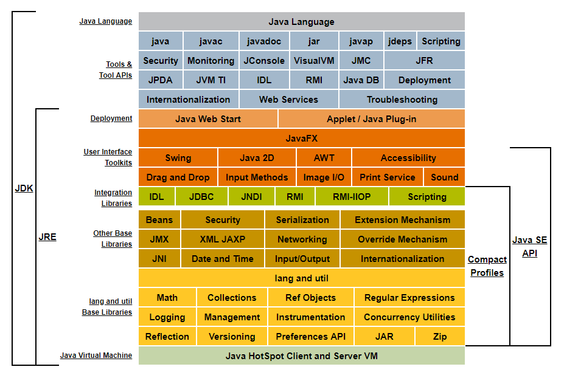

# 01、 软件开发介绍
- 软件开发软件，即一系列按照特定顺序组织的计算机数据和指令的集合。软件有系统软件和应用软件之分。
- 人机交互方式
- 图形化界面 (Graphical User Interface
GUI) 这种方式简单直观，使用者易于接受，容易上手操作。 - 命令行方式 (Command Line Interface
CLI)：需要有一个控制台，输入特定的指令，让计算机完成一些操作。较为麻烦，需要记录住一些命令。
- 图形化界面 (Graphical User Interface
Pascal 之父 Nicklaus Wirth：“Algorithms+DataStructures=Programs”
# 1.1、常用的 DOS 命令
- ⊞+R，一起按下，输入 cmd，可以打开 dos 界面。
- dir : 列出当前目录下的文件以及文件夹
- md: 创建目录
- rd : 删除目录
- cd: 进入指定目录
- cd… : 退回到上一级目录
- cd: 退回到根目录
- del : 删除文件
- exit : 退出 dos 命令行
- 补充：echo javase>1.doc
- 常用快捷键
- ← →：移动光标
- ↑↓：调阅历史操作命令
- Delete 和 Backspace：删除字符
- 注意：在输入 dos 命令时，要是用英文输入，所有标点符号都是英文。
# 02、计算机编程语言介绍
- 什么是计算机语言
- 语言：是人与人之间用于沟通的一种方式。
- 例如：中国人与中国人用普通话沟通。而中国人要和英国人交流，就要学习英语。
- 计算机语言：人与计算机交流的方式。
- 如果人要与计算机交流，那么就要学习计算机语言。计算机语言有很多种。如：C ,C++,Java,PHP,Kotlin，Python，Scala 等。
- 第一代语言
- 机器语言：指令以二进制代码形式存在。
- 第二代语言
- 汇编语言：使用助记符表示一条机器指令。
- 第三代语言：高级语言
- C、Pascal、Fortran 面向过程的语言
- C++ 面向过程 / 面向对象
- Java 跨平台的纯面向对象的语言
- .NET 跨语言的平台
- Python、Scala…
- 面向过程：例如张三打篮球，他打篮球的全部过程 (拿球、传球、投篮……)。
- 面向对象：人的对象，人的运动的动作，运动的器械这三个对象，实例化一个张三的对象，对象有一个打篮球的动作，器械是篮球。
- 面向对象能更好的在抽象的层面分析问题，在程序实现跨越极大的赋予之前的代码。这些是面向过程编程极难实现的。
# 03、 Java 语言概述
是 SUN (Stanford University Network，斯坦福大学网络公司) 1995 年推出的一门高级编程语言。
是一种面向 Internet 的编程语言。Java 一开始富有吸引力是因为 Java 程序可以在 Web 浏览器中运行。这些 Java 程序被称为 Java 小程序（applet）。applet 使用现代的图形用户界面与 Web 用户进行交互。applet 内嵌在 HTML 代码中。
随着 Java 技术在 web 方面的不断成熟，已经成为 Web 应用程序的首选开发语言。后台开发：Java、PHP、Python、Go、Node.js
随着 Java 技术在 web 方面的不断成熟，已经成为 Web 应用程序的首选开发语言。后台开发：Java、PHP、Python、Go、Node.js
# 3.1、Java 技术体系平台
1、JavaSE (Java Standard Edition) 标准版
支持面向桌面级应用（如 Windows 下的应用程序）的 Java 平台，提供了完整的 Java 核心 API，此版本以前称为 J2SE
2、JavaEE (Java Enterprise Edition) 企业版
是为开发企业环境下的应用程序提供的一套解决方案。该技术体系中包含的技术如：Servlet 、Jsp 等，主要针对于 Web 应用程序开发。版本以前称为 J2EE
3、Java ME (Java Micro Edition) 小型版
支持 Java 程序运行在移动终端（手机、PDA）上的平台，对 Java API 有所精简，并加入了针对移动终端的支持，此版本以前称为 J2ME
4、Java Card
支持一些 Java 小程序（Applets）运行在小内存设备（如智能卡）上的平台
5、从 Java 的应用领域来分，Java 语言的应用方向主要表现在以下几个方面：
- 企业级应用：主要指复杂的大企业的软件系统、各种类型的网站。Java 的安全机制以及它的跨平台的优势，使它在分布式系统领域开发中有广泛应用。应用领域包括金融、电信、交通、电子商务等。
- Android 平台应用：Android 应用程序使用 Java 语言编写。Android 开发水平的高低很大程度上取决于 Java 语言核心能力是否扎实。
- 大数据平台开发：各类框架有 Hadoop，spark，storm，flink 等，就这类技术生态圈来讲，还有各种中间件如 flume，kafka，sqoop 等等，这些框架以及工具大多数是用 Java 编写而成，但提供诸如 Java，scala，Python，R 等各种语言 API 供编程。
- 移动领域应用：主要表现在消费和嵌入式领域，是指在各种小型设备上的应用，包括手机、PDA、机顶盒、汽车通信设备等。
Java 主要特性
- Java 语言是易学的。Java 语言的语法与 C 语言和 C++ 语言很接近，使得大多数程序员很容易学习和使用 Java。
- Java 语言是强制面向对象的。Java 语言提供类、接口和继承等原语，为了简单起见，只支持类之间的单继承，但支持接口之间的多继承，并支持类与接口之间的实现机制（关键字为 implements）。
- Java 语言是分布式的。Java 语言支持 Internet 应用的开发，在基本的 Java 应用编程接口中有一个网络应用编程接口（java net），它提供了用于网络应用编程的类库，包括 URL、URLConnection、Socket、ServerSocket 等。Java 的 RMI（远程方法激活）机制也是开发分布式应用的重要手段。
- Java 语言是健壮的。Java 的强类型机制、异常处理、垃圾的自动收集等是 Java 程序健壮性的重要保证。对指针的丢弃是 Java 的明智选择。
- Java 语言是安全的。Java 通常被用在网络环境中，为此，Java 提供了一个安全机制以防恶意代码的攻击。如：安全防范机制（类 ClassLoader），如分配不同的名字空间以防替代本地的同名类、字节代码检查。
- Java 语言是体系结构中立的。Java 程序（后缀为 java 的文件）在 Java 平台上被编译为体系结构中立的字节码格式（后缀为 class 的文件），然后可以在实现这个 Java 平台的任何系统中运行。
- Java 语言是解释型的。如前所述，Java 程序在 Java 平台上被编译为字节码格式，然后可以在实现这个 Java 平台的任何系统的解释器中运行。先编译后解释。
- **Java 是性能略高的。** 与那些解释型的高级脚本语言相比，Java 的性能还是较优的。
- Java 语言是原生支持多线程的。在 Java 语言中，线程是一种特殊的对象，它必须由 Thread 类或其子（孙）类来创建。
# 04、 Java 程序运行机制及运行过程
- 特点一：面向对象
- 两个基本概念：类、对象
- 三大特性：封装、继承、多态
- 特点二：健壮性
- 吸收了 C/C++ 语言的优点，但去掉了其影响程序健壮性的部分（如指针、内存的申请与释放等），提供了一个相对安全的内存管理和访问机制
- 特点三：跨平台性
- 跨平台性：通过 Java 语言编写的应用程序在不同的系统平台上都可以运行。“Write once , Run Anywhere”
- 原理：只要在需要运行 java 应用程序的操作系统上，先安装一个 Java 虚拟机 (JVM Java Virtual Machine) 即可。由 JVM 来负责 Java 程序在该系统中的运行。
# 4.1、Java 两种核心机制
1、Java 虚拟机 (Java VirtalMachine)
- JVM 是一个虚拟的计算机，具有指令集并使用不同的存储区域。负责执行指令，管理数据、内存、寄存器。
- 对于不同的平台，有不同的虚拟机。
- 只有某平台提供了对应的 java 虚拟机，java 程序才可在此平台运行。
- Java 虚拟机机制屏蔽了底层运行平台的差别，实现了 **“一次编译，到处运行”**。
2、垃圾收集机制 (Garbage Collection)
- 不再使用的内存空间应回收 —— 垃圾回收。
- 在 C/C++ 等语言中，由程序员负责回收无用内存。
- Java 语言消除了程序员回收无用内存空间的责任：它提供一种系统级线程跟踪存储空间的分配情况。并在 JVM 空闲时，检查并释放那些可被释放的存储空间。
- 垃圾回收在 Java 程序运行过程中自动进行，程序员无法精确控制和干预。
Java 程序还会出现内存泄漏和内存溢出问题吗？Yes!
1、明确什么是 JDK, JRE
- JDK (Java Development Kit Java 开发工具包)
- JDK 是提供给 Java 开发人员使用的，其中包含了 java 的开发工具，也 ** 包括了 JRE。** 所以安装了 JDK，就不用在单独安装 JRE 了。其中的开发工具：编译工具 (javac.exe) 打包工具 (jar.exe) 等。
- JRE (Java Runtime Environment Java 运行环境)
- 包括 Java 虚拟机 (JVM Java Virtual Machine) 和 Java 程序所需的核心类库等，如果想要运行一个开发好的 Java 程序，计算机中只需要安装 JRE 即可。
2、简单而言，使用 JDK 的开发工具完成的 java 程序，交给 JRE 去运行。


- JDK = JRE + 开发工具集（例如 Javac 编译工具等）
- JRE = JVM + Java SE 标准类库
3、官方网址：
- 下载 JDK：www.oracle.com
- java.sun.com
- 安装 JDK
- 傻瓜式安装，下一步即可。
- 建议：安装路径不要有中文或者空格等特殊符号。
- 如果操作系统是 64 位的，软件尽量选择支持 64 位的（除非软件本身不区分）。
- 当提示安装 JRE 时，正常在 JDK 安装时已经装过了，但是为了后续使用 Eclipse 等开发工具不报错，建议也根据提示安装 JRE。
4、配置环境变量
- path：windows 系统执行命令时要搜寻的路径。
- 在 dos 命令行中敲入 javac，出现错误提示：
- 错误原因：当前执行的程序在当前目录下如果不存在，windows 系统会在系统中已有的一个名为 path 的环境变量指定的目录中查找。如果仍未找到，会出现以上的错误提示。所以进入到 jdk 安装路径 \bin 目录下，执行 javac，会看到 javac 参数提示信息。
5、每次执行 java 的工具都要进入到 bin 目录下，非常麻烦。可不可以在任何目录下都可以执行 java 的工具呢？
根据 windows 系统在查找可执行程序的原理，可以将 java 工具所在路径定义到 path 环境变量中，让系统帮我们去找运行执行的程序。
配置方法：
我的电脑–属性–高级系统设置–环境变量
编辑 path 环境变量，在变量值开始处加上 java 工具所在目录，后面用 “;” 和其他值分隔开即可。
打开 DOS 命令行，任意目录下敲入 javac。如果出现 javac 的参数信息，配置成功。
注：具体操作流程，参看 https://www.yuque.com/nizhegechouloudetuboshu/library/rc1889
6、验证是否成功

7、选择合适的文本编辑器或 IDE 开发
- eclipse——https://www.eclipse.org/downloads/packages/
- IDEA——https://www.jetbrains.com/idea/download/
- 官网太慢，备用地址：链接：https://pan.baidu.com/s/1rnBuCPKCyunCTyNKoRY7YA，提取码：4x3d
- 安装步骤：https://www.yuque.com/nizhegechouloudetuboshu/library/rc1889。
1、步骤：
- 将 Java 代码编写到扩展名为.java 的文件中。
- 选择最简单的编辑器：记事本。
- 敲入代码 class Test {} 将文件保存成 Test.java，这个文件是存放 java 代码的文件，称为源文件。
2、第一个 Java 程序
public class Test { | |
public static void main(String[] args) { | |
System.out.println("hello world"); | |
} | |
} |
1、通过 javac 命令对该 java 文件进行编译。
- 有了 java 源文件，通过编译器将其编译成 JVM 可以识别的字节码文件。
- 在该源文件目录下，通过 javac 编译工具对 Test.java 文件进行编译。
- 如果程序没有错误，没有任何提示，但在当前目录下会出现一个 Test.class 文件，该文件称为字节码文件，也是可以执行的 java 的程序。
2、通过 java 命令对生成的 class 文件进行运行。
有了可执行的 java 程序 (Test.class 字节码文件)
通过运行工具 java.exe 对字节码文件进行执行。
出现提示：缺少一个名称为 main 的方法。
因为一个程序的执行需要一个起始点或者入口，所以在 Test 类中的加入 public static void main (String [] args){}
对修改后的 Test.java 源文件需要重新编译，生成新的 class 文件后，再进行执行。
发现没有编译失败，但也没有任何效果，因为并没有告诉 JVM 要帮我们做什么事情，也就是没有可以具体执行的语句。
想要和 JVM 来个互动，只要在 main 方法中加入一句 System.out.println (“Hello World"); 因为程序进行改动，所以再重新编译，运行即可。


1、问题 1
- 源文件名不存在或者写错
- 当前路径错误
- 后缀名隐藏问题
2、问题 2
- 类文件名写错，尤其文件名与类名不一致时，要小心
- 类文件不在当前路径下，或者不在 classpath 指定路径下
3、问题 3
- 声明为 public 的类应与文件名一致，否知编译失败
4、问题 4
- 编译失败，注意错误出现的行数，再到源代码中指定位置改错
总结：学习编程最容易犯的错是语法错误。Java 要求你必须按照语法规则编写代码。如果你的程序违反了语法规则，例如：忘记了分号、大括号、引号，或者拼错了单词，java 编译器都会报语法错误。尝试着去看懂编译器会报告的错误信息。
用于注解说明解释程序的文字就是注释。
Java 中的注释类型：
单行注释
- 格式：// 注释文字
多行注释
格式：/* 注释文字 */
注：对于单行和多行注释，被注释的文字，不会被 JVM（java 虚拟机）解释执行。
多行注释里面不允许有多行注释嵌
文档注释 (java 特有)
格式：
/*** @author 指定 java 程序的作者 **
* @version 指定源文件的版本 **
*/
注释内容可以被 JDK 提供的工具 javadoc 所解析，生成一套以网页文件形式体现的该程序的说明文档。
提高了代码的阅读性；调试程序的重要方法。
注释是一个程序员必须要具有的良好编程习惯。
将自己的思想通过注释先整理出来，再用代码去体现。
Java 源文件以 “java” 为扩展名。源文件的基本组成部分是类（class），如本例中的 HelloWorld 类。
Java 应用程序的执行入口是 main () 方法。它有固定的书写格式：
public static void main(String[] args) {…}Java 语言严格区分大小写。
Java 方法由一条条语句构成，每个语句以 “;” 结束。
大括号都是成对出现的，缺一不可。
一个源文件中最多只能有一个 public 类。其它类的个数不限，如果源文件包含一个 public 类，则文件名必须按该类名命名。